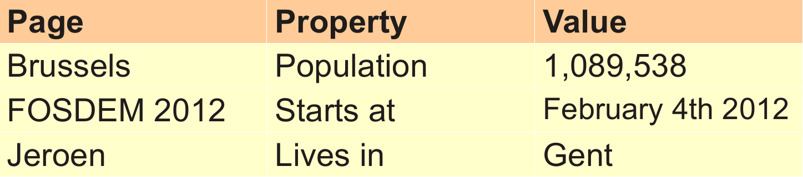
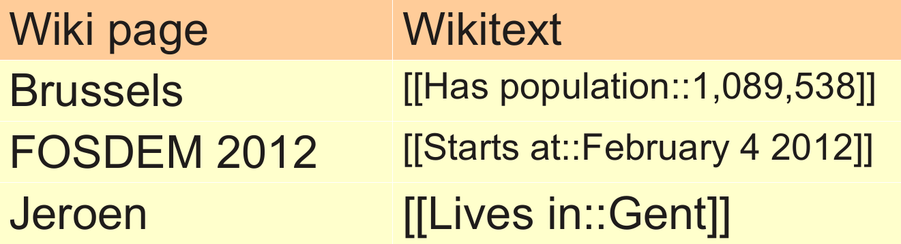
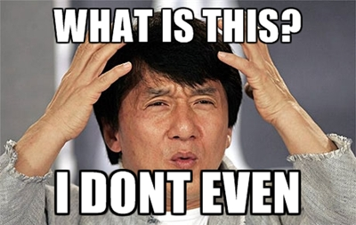
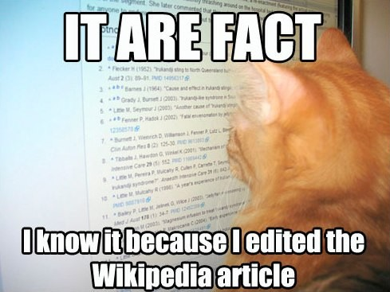

Structured data in MediaWiki
Structured data in MediaWiki
bit.ly/wcn2012
MediaWiki: getting started
MediaWiki extensions
-
Get existing extensions
* git clone https://gerrit.wikimedia.org/r/p/mediawiki/extensions/SemanticMediaWiki.git
* git clone https://gerrit.wikimedia.org/r/p/mediawiki/extensions/Wikibase.git
- Request your own repository
- Different levels of access
MediaWiki extension points
MediaWiki: getting started
MediaWiki
- Text
- Rich text and media
- Data
Structured data in MediaWiki
Semantic MediaWiki: basic idea
-
Assign property-value pairs to wikipages

Semantic MediaWiki: why?
- Searching & querying data in the wiki
- Sharing data with other sites & apps
Semantic MediaWiki: how?
-
Typical wiki syntax: [[property::value]]

Average users reaction to wikitext

Properties in the wiki...
- ... can be introduced as needed
- ... have their own wiki pages
- ... may be given a datatype
Property examples
- Capital of
- Population
- Start date
- Awesomeness factor
Datatypes in the wiki...
- ... affect how data values are displayed
- ... influence searching and browsing
- ... are usually not user-defined
Datatype examples
- Number
- Text
- Page
- Date
- URL
SMW: inline queries
Basic idea:
Allow dynamic views on wiki data to be embedded into pages.
Aspects of SMW inline queries
- Which pages constitute the result?
- Values for which properties are
displayed per result?
- How should all this be formatted?
Aspects of SMW inline queries
- SMW query language
- Additional printout statements
- Formatting parameters
Inline query example
{{#ask:
[[Category:Country]]
[[located in::Africa]]
| ?Population
| ?Area
| format=table
}}
Wikibase
- Developed for Wikidata
- A set of extensions
Wikibase: differences with SMW

Wikibase: differences with SMW
Server-clients vs single wiki
More complex queries
User defined data types
Assigning "wikitext values" to properties
SMW & Wikibase
- DataValues
- Parsers, formatters and validators
- DataTypes
- Parameter processing
- Result formats
- Result objects
- Query descriptions
- Moar?